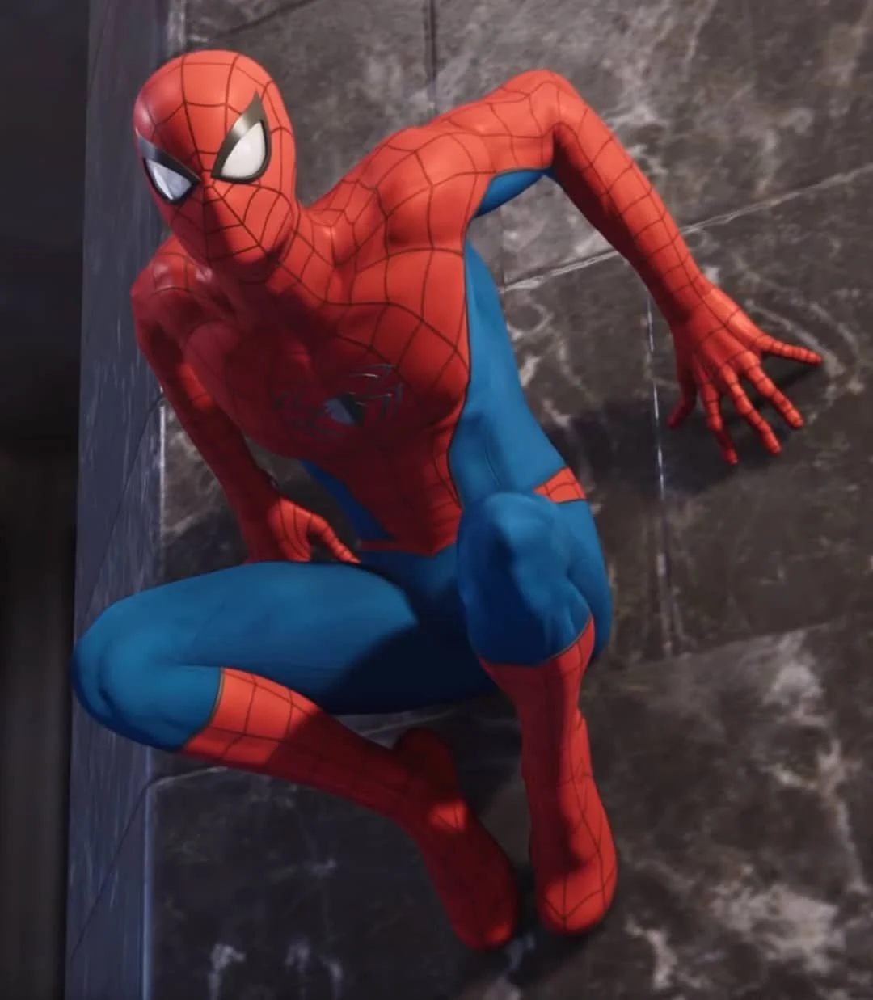
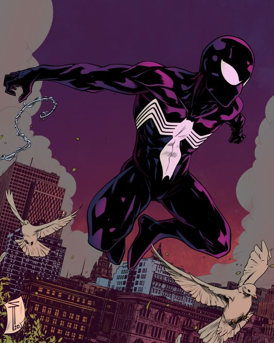
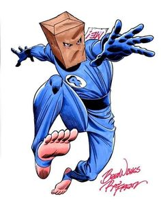
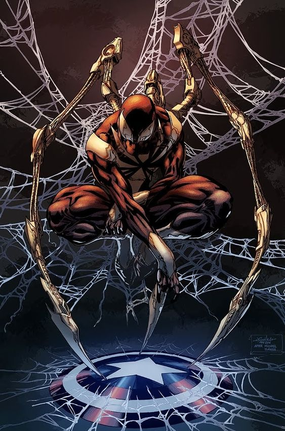

| Traje | Descripción |
|---|---|
|  |
Traje clásico Por supuesto, Peter Parker no pretendía ser un defensor de la ley cuando obtuvo sus sorprendentes poderes; quería dedicarse al mundo del espectáculo y necesitaba una imagen llamativa para entrar en escena. Se enteró de que en la clase de danza de la Preparatoria Midtown iban a tirar algunos disfraces. Entró en el instituto por la noche y encontró uno que le venía bien, lo llevó al aula de arte donde se pasó horas serigrafiando una telaraña en la camisa. También se confeccionó un par de guantes y botas ajustados y, con unos espejos unidireccionales que encontró en el aula de teatro, se fabricó un antifaz. Su primer taje ya estaba listo. |
|  |
Traje Negro / Simbionte En 1984, ocurre el primer gran crossover de Marvel: Secret War, donde todos los superhéroes y los supervillanos son obligados a luchar entre ellos, en esta batalla, Spider-Man sufre bastantes destrozos en el traje y va a una máquina alienígena en la base de los superhéroes, que hace trajes. De pronto, de la máquina sale una bola negra que se expande y se pega a Spider-Man, convirtiéndose en un traje nuevo, de color negro. Spider-Man lleva este traje y al final se lo quita porque resulta ser un alienígena simbionte que, además de dar más poder al que lo lleva, le va dominando poco a poco y volviéndolo cada vez más agresivo y malvado. |
|  |
The Bombastic Bag-Man Cuando se quitó el traje del simbionte, Spider-Man se vio obligado a usar un viejo disfraz de los Cuatro Fantásticos, dado por Mr.Fantástico y La Antorcha Humana con una máscara de bolsa de papel y un cartel de "Pateame" en la espalda, cortesía de Johnny Storm, la antorcha humana, camino a su casa para recuperar su viejo traje clásico, tuvo que entrar en acción y los noticieros lo identificaron como "The Bombastic Bag-Man" |
|  |
Iron Spider En 2006 ocurre el crossover Civil War, donde los superhéroes se enfrentan entre ellos por culpa de un acta de registro de superhumanos, esto divide a los que están a favor, liderados por Iron Man, y los que están en contra, liderados por el Capitán América. Al principio, Spider-Man está a favor del acta y muy al lado de Iron Man e incluso decide revelar su identidad secreta a todo el mundo en una rueda de prensa. Tony Stark le hace un traje cibernético impresionante, que utiliza hasta que decide cambiar de bando viendo los abusos de esta nueva ley. |